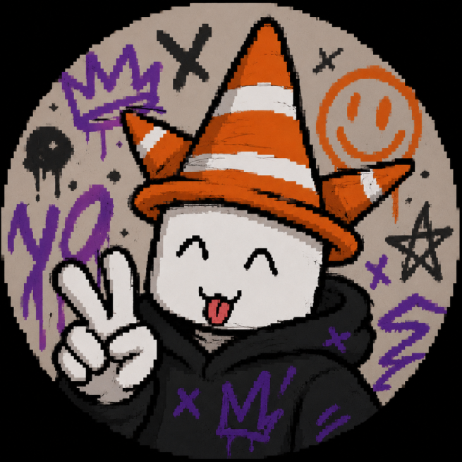

Heyyyyaa!!! I'm vauryxa, a youngster from Bangladesh looking to get through his life by thriving for the best! Born in '012, life has been eventful for me, thus I can take it for granted and use that wisdom to move on forward. Please take a moment to look at my socials (and like my 2 projects idk lol)
a school project — friita.netlify.app
HMU IF YOU WANNA DO SMTH COOL